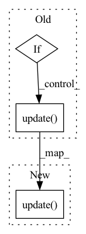

Pattern ID :1597
Before Change
return self._mapping
def forward(self, *args, **kwargs):
if self._compute_on_step:
return self._metric(*args, **kwargs)
else:
self._metric.update( *args, **kwargs)
def compute(self):
value = self._metric.compute()
return valueAfter Change
def forward(self, *args, **kwargs):
Update metric states.
self._metric.update( *args, **kwargs)
def compute(self):
Compute metric.
value = self._metric.compute()In pattern: SUPERPATTERN
Frequency: 3
Non-data size: 3
Instances Fragment ID: 6501649
Project Name: eora-ai/torchok
Commit Name: c94b247f39a9b2c22c028f8354e559b4d1656291
Time: 2022-07-05
Author: rashit.bayazitov.1995@gmail.com
File Name: src/metrics/metrics_manager.py
M Class Name: MetricWithUtils
N Class Name: MetricWithUtils
M Method Name: forward(1)
N Method Name: forward(1)
M Parent Class: nn.Module
N Parent Class: nn.Module
M File Name: src/metrics/metrics_manager.py
N File Name: src/metrics/metrics_manager.py
M Start Line: 51
M End Line: 56
N Start Line: 44
N End Line: 44
Before Change
x = pad(x)
return self.net(x, **kwargs)
if isinstance(x, torch.Tensor):
xi = x[:, :-1]
xo = x[:, 1:]
// help auto-solve an area of confusion around input masks in auto-regressive
// if user supplies a mask that is only off by one from the source sequence, resolve it for them
mask = kwargs.pop("mask", None)
if mask is not None and mask.shape[1] == x.shape[1]:
mask = mask[:, :-1]
kwargs.update(mask = mask)
else:
xi = pad(list(map(lambda t: t[:-1], x)))
xo = pad(list(map(lambda t: t[1:], x)))
After Change
mask = kwargs.pop("mask", None)
if mask is not None and mask.shape[1] == x.shape[1]:
mask = mask[:, :-1]
kwargs.update(mask = mask)
out = self.net(xi, **kwargs)
loss = F.cross_entropy(out.transpose(1, 2), xo, ignore_index = self.ignore_index) Fragment ID: 6501647
Project Name: lucidrains/performer-pytorch
Commit Name: 0c92b80b089f36e6cf86713271708d467472769e
Time: 2020-12-07
Author: lucidrains@gmail.com
File Name: performer_pytorch/autoregressive_wrapper.py
M Class Name: AutoregressiveWrapper
N Class Name: AutoregressiveWrapper
M Method Name: forward(3)
N Method Name: forward(3)
M Parent Class: nn.Module
N Parent Class: nn.Module
M File Name: performer_pytorch/autoregressive_wrapper.py
N File Name: performer_pytorch/autoregressive_wrapper.py
M Start Line: 84
M End Line: 101
N Start Line: 87
N End Line: 95
Before Change
x, padding = pad_to_multiple(x, self.pad_multiple, dim=self.pad_dim)
args[ind] = x
if padding != 0:
new_mask = F.pad(input_mask, (0, padding), value=False)
kwargs.update(input_mask=new_mask)
out = self.net(*args, **kwargs)
return out[:, :, 0:t]
After Change
args = map(lambda t: pad_to_multiple(t, self.pad_multiple, dim=-2), args)
new_mask = pad_to_multiple(input_mask, self.pad_multiple, dim=-1, value=False)
kwargs.update(input_mask=new_mask)
out = self.net(*args, **kwargs)
return out[:, :, 0:t]
Fragment ID: 6501646
Project Name: lucidrains/routing-transformer
Commit Name: f93f7a6b829422e259a3e439f1bf0baa7abc2e30
Time: 2020-05-27
Author: lucidrains@gmail.com
File Name: routing_transformer/autopadder.py
M Class Name: Autopadder
N Class Name: Autopadder
M Method Name: forward(1)
N Method Name: forward(1)
M Parent Class: nn.Module
N Parent Class: nn.Module
M File Name: routing_transformer/autopadder.py
N File Name: routing_transformer/autopadder.py
M Start Line: 25
M End Line: 43
N Start Line: 24
N End Line: 34